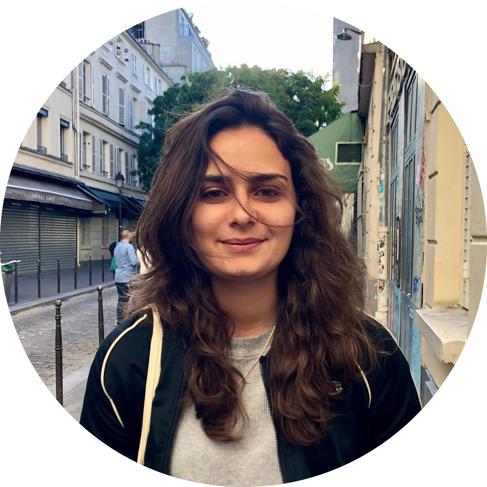
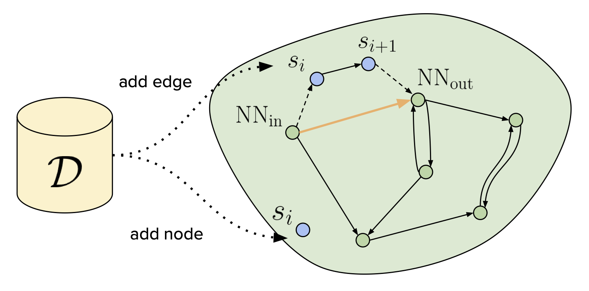
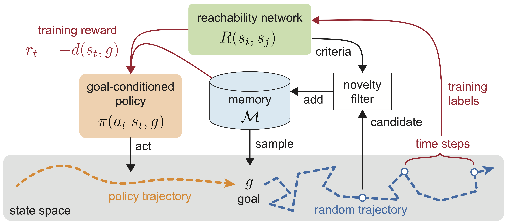
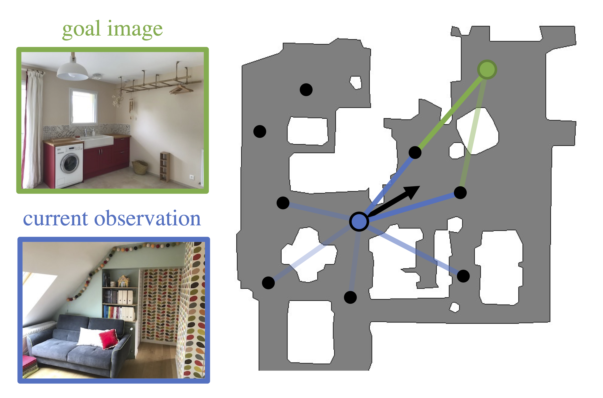
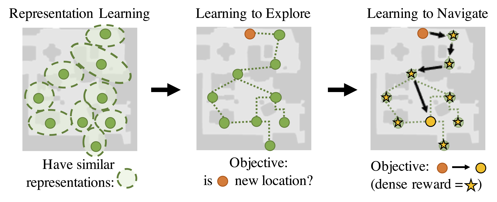

|
Lina Mezghani
I am a final-year PhD student at FAIR Paris and Inria (Thoth team).
I am advised by Piotr
Bojanowski and Karteek
Alahari.
My research focuses on making reinforcement learning algorithm rely less on supervision, by
exploiting self-supervised and unsupervised methods.
I received an MSc/BSc in Applied Mathematics & Computer Science from École polytechnique (diplôme
d'Ingénieur) and an MSc in Machine Learning from École Normale Supérieure Paris-Saclay (Master MVA).
During my studies I
was a software engineer intern at Pilot Vision, Stockholm, and I visited Cornell Tech University
working on
computer vision with Prof. Mor Naaman.
Email /
CV /
Google Scholar
/
LinkedIn /
GitHub
|

|
|

|
Learning Goal-Conditioned Policies Offline with Self-Supervised Reward Shaping
Lina Mezghani, Sainbayar Sukhbaatar, Piotr Bojanowski, Alessandro Lazaric, Karteek Alahari
CoRL, 2022
paper / project page / bibtex
|
|

|
Walk the Random Walk: Learning to Discover and Reach Goals Without Supervision
Lina Mezghani, Sainbayar Sukhbaatar, Piotr Bojanowski, Karteek Alahari
Agent Learning in Open-Endedness (ALOE) Workshop, ICLR, 2022 (oral)
paper / bibtex
|
|

|
Memory-Augmented Reinforcement Learning for Image-Goal Navigation
Lina Mezghani, Sainbayar Sukhbaatar, Thibaut Lavril, Oleksandr Maksymets, Dhruv Batra, Piotr Bojanowski, Karteek Alahari
IROS, 2022
paper / data / bibtex
|
|

|
Learning to Visually Navigate in Photorealistic Environments Without any Supervision
Lina Mezghani, Sainbayar Sukhbaatar, Arthur Szlam, Armand Joulin, Piotr Bojanowski
arXiv, 2020
paper / bibtex
|
The code for this page is available here.
Credits to Jon Barron for the template.
|
|
{kind=link}